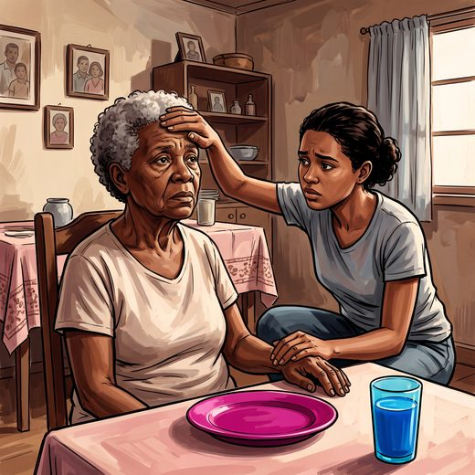

Ferramenta desta aula
Delirium — 4AT. Roda no navegador, sem cadastro.
Consulta rápida à beira do leito
Condutas, doses e interações.
Referências da aula · 7
- Jarrett PG, Rockwood K, Carver D, Stolee P, Cosway S. Illness presentation in elderly patients. Arch Intern Med. 1995;155(10):1060-4. PMID 7748049.PubMed
- High KP, Bradley SF, Gravenstein S, et al. Clinical practice guideline for the evaluation of fever and infection in older adult residents of long-term care facilities: 2008 update by the Infectious Diseases Society of America. Clin Infect Dis. 2009;48(2):149-71. PMID 19072244.PubMed
- Brieger D, Eagle KA, Goodman SG, et al. Acute coronary syndromes without chest pain, an underdiagnosed and undertreated high-risk group: insights from the Global Registry of Acute Coronary Events. Chest. 2004;126(2):461-9. PMID 15302732.PubMed
- Inouye SK, Westendorp RGJ, Saczynski JS. Delirium in elderly people. Lancet. 2014;383(9920):911-22. PMID 23992774. doi:10.1016/S0140-6736(13)60688-1.PubMedDOI
- Inouye SK, van Dyck CH, Alessi CA, Balkin S, Siegal AP, Horwitz RI. Clarifying confusion: the confusion assessment method. Ann Intern Med. 1990;113(12):941-8. PMID 2240918.PubMed
- Inouye SK, Studenski S, Tinetti ME, Kuchel GA. Geriatric syndromes: clinical, research, and policy implications of a core geriatric concept. J Am Geriatr Soc. 2007;55(5):780-91. PMID 17493201. doi:10.1111/j.1532-5415.2007.01156.x.PubMedDOI
- Freitas EV, Py L, organizadores. Tratado de Geriatria e Gerontologia. 5ª ed. Rio de Janeiro: Guanabara Koogan; 2022.